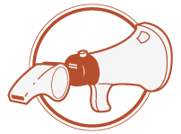
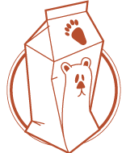
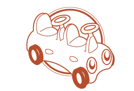

Auckland
What is Gather?
Gather is Auckland’s annual Barcamp, an un-conference that’s been running for the last six years supporting and encouraging the creative community of Auckland.
Gather is about the coming together of 275 passionate creative New Zealanders who care enough to share their expertise, their innovation and their success to fuel the embers of tomorrow’s creative forest fires.
Gather has not done this alone, it stands as an intersection in the creative calendar of assemblies, meetups and conferences.
Gather is exactly what is implied by the name, a gathering of the best that the creative community has to offer. It’s a time when we gather designers, developers, artists, scientists, teachers, researchers and politicians in an attempt to create an exhibition of the best ideas: the best design practices and principles, the most avante garde in art and the cutting edge of engineering and science.
And maybe, with all that genius, we can hopefully influence our politicians in a way that will benefit our industries and ultimately our country.
Gather en Masse
Gather will host three visionary speakers just before lunch at a session called Gather en Masse, in the main auditorium. They will each present an inspirational keynote of 15 minutes on a topic of their choosing.

Rowan Simpson
Rowan was founder of Flathunt, employee #3 at Trade Me, and subsequently head of development and product teams and an early investor in Xero. He is co-founder of Southgate Labs, and early investor and advisor to a number of exciting startups including Vend and GoVocab. Rowan occasionally vents on rowansimpson.com.

Layton Duncan
Layton started developing for iOS before Apple released the SDK when he started Polar Bear Farm in 2007. More recently he co-founded Sense Medical, a company that uses the iOS platform to enable real time information recording and sharing within hospitals. Layton also founded Christchurch’s first co-working space called Epicentre and since #EQNZ (it wasn’t his fault!) he’s been passionate about capitalising on the rebuilding opportunity.

Penny Hagen
Penny assists organisations to take a participatory approach to the design of process, strategy, products and services. She has over 14 years’ experience instigating, designing and producing design, research, and training projects in Australia and New Zealand working across commercial, community and academic sectors. Penny will be running a workshop with Design Assembly on 21 June.
Schedule
The schedule is open: add, suggest or edit your session on the Gather schedule.
Sessions need not be presentations, although they can be. Instead, sessions are periods of time devoted to the discussion and exploration of topics. Sometimes you're the rocket scientist in the room who knows the most about jet engines. Other times you’re the enthusiast who's thrilled to find out that although you had proposed to be the host of the session, you have found yourself to be the least knowledgeable about the topic. The most important thing is that you’re at Gather, because you care.
Gather en Masse
During Gather en Masse before lunch, Gather will host three visionary speakers. They will each present an inspirational keynote of 15 minutes on a topic of their choosing.
FAQs
Who are the speakers?
Unlike a regular conference, you don't just take notes while industry celebrities share their current fascination. You share your fascinations with the other attendees and they share theirs with you. There is a time and place for conferences as we know them; they are extremely helpful for education and motivation. Innovation, however, is something that is rarely the result of a conference. Often a conference's central focus is for stories to be told, not born.
Un-conferences are different; past leads to present and present inspires the future. What you know is what you share, what you share is what you discuss, debate and argue about at Gather. And those discussions lead to innovation and action. New stories are born. If your intentions are to attend Gather, sit back, listen, learn and horde; then we kindly ask you to refrain from coming.
Who attends Gather?
Gather is attended by industry professionals, sure, but that’s not all. They are a special kind of professional who are willing to block out an entire Saturday to attend a day with no pre-planned agenda and only the promise of what is possible based upon what they can bring to the table. These are the professionals who make a difference, not just a buck. These are the people who come to Gather.
Where and when is Gather?
Gather 2012 will be held at Botany Downs Secondary College in East Auckland on the , a Saturday. Gather starts early and finishes late. We ask you to come out to East Auckland where it’s hard to just pop out for lunch with the in-laws or a client and re-join us in the afternoon. We know that, and we want it that way, because we believe the event deserves your full attention for the entire day — and once you're there, you will too.
What can I expect to get?
We have sponsors who make it possible for us to take care of you; morning tea, lunch and afternoon tea are all provided (we will cater to special dietary requirements; don't worry!). We even give you t-shirts that commemorate the day, help spark conversations in the future and looks damn good! We will look after you. You’re there because you have something important to share. That should be your only concern; sharing and interacting with the other delegates.
Why do I have to pay this year?
Over the last 6 years, Gather has grown from a small event of around 50 delegates to an event that's very high in demand. We can’t cater for everyone who wants to come. We’ve found a sweet-spot for the size of the event and that is smaller than the number of people who want to attend. Paying $15 means you have skin in the game; it means we know you are coming and it means you know you are coming. It’s a token amount that anyone can afford; you don’t need a company to pay for you to come, even students can afford it!
Early-bird? Late-bird?
The earlier you buy a ticket the better! Early-bird ends on the 23rd of May and late-bird starts on the 23rd of June, a week before we Gather.
What is a ‘Super Supporter’?
They are awesome. A number of people want to support Gather (and the people behind it) but don’t call the shots at the firm they work at. Or they're a small firm and can’t afford the larger corporate sponsorships. These people still want to contribute to the sustainability of the event and so we’re giving them a way to show their support.
Super Supporters will get a small surprise as a token of our appreciation of their awesomeness.
How will the day be organised?
The schedule is open: add, suggest or edit your session on the Gather schedule.
Sessions need not be presentations, although they can be. Instead, sessions are periods of time devoted to the discussion and exploration of topics. Sometimes you're the rocket scientist in the room who knows the most about jet engines. Other times you’re the enthusiast who's thrilled to find out that although you had proposed to be the host of the session, you have found yourself to be the least knowledgeable about the topic. The most important thing is that you’re at Gather, because you care.